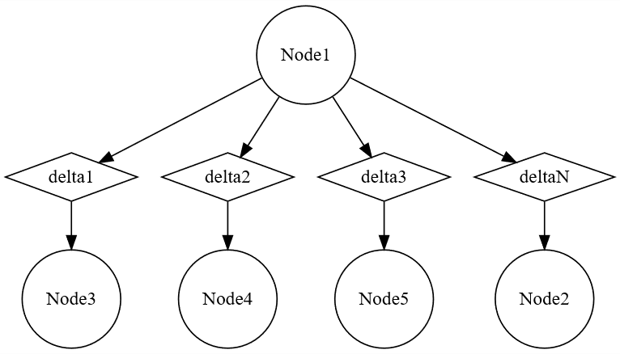

|
Extra Credit for HW3
|
There exist two pieces of Extra Credit in this Project: The langSize() method, and an alternative to the DFAClosure Class. We shall begin with the alternative to the DFAClosure class since this is the foundation of the entire project. Looking at the password DFA, I was scared that the array implementation of DFA Closure would parse through every possible state between the states of the given DFAs. This would not be totally efficient because not all states would be reachable, and would essentially null. For DFAs that are combined using the cross product, there may be elements between the DFAs which are shared. For example, length is an element that is shared between sub DFAs in the password DFA: repetitions of the character 'a' and the general length of the input DFAs. A state defining two consecutive 'a's and a state defining the string length of 1 cannot exist. Thusly, a brute force permutation of all possibel states would not be valid. To counter this, I decided to build a workflow that creates new states based off of the string input. The way I always imagined it in my mind was a WEB of states connected by delta characters. Thusly, by following the delta chracters, only states on the path from the start state would be included in the list of states of the cross product.
The Web data structure. This is effectively a Graph, but I called it a Web. The genreal structure is this: Nodes are equivalent to states, and Deltas are equivalent to delta inputs.
There of a series of methods that are used to traverse this tree that are described in the documentation of the Web class in this website. These methods have been integrated into the DFA class to more effectively process states and string inputs using this data structure. These modifications can be found in the DFA class. In addition the decide method was modified to support traversals through the Web. This modification can be found in the FSA class.
CHANGES: Web.java, DFA.java, FSA.java
The langSize() found in the DFA class method implementation was made easier via this structure since the method can just traverse the entire web via the referential structure and count the number of deltas along the way. I also went and assumed that since every state in an FSA must have destination possibilities for every delta in the alphabet, it is definitionally garunteed for there to be a cycle in every FSA. Thusly, I assumed that the end of a path can be counted if a state cycles back to itself.
1.8.15